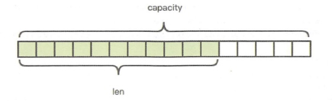
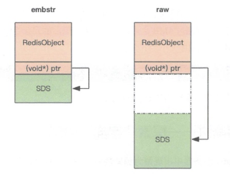
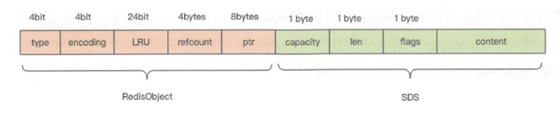
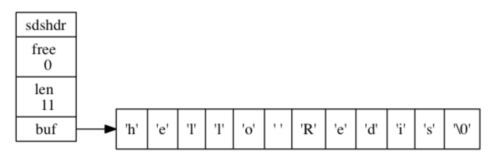
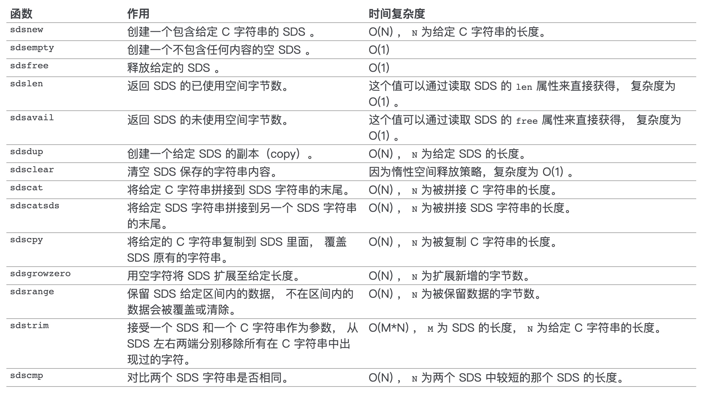

Redis 中的字符串是可以修改的字符串，在内存中它是以字节数组的形式存在的。Redis 没有直接使用 C 语言传统的字符串表示（以空字符结尾的字符数组， NULL 即（0x\0）作为结束符，以下简称 C 字符串），因为要获取 NULL 结尾的字符串的长度使用的是 strlen 标准库函数，这个函数的算法复杂度是 O(n)，它需要对字节数组进行遍历扫描，作为单线程的 Redis 表示承受不起。
Redis是自己构建了一种名为简单动态字符串（simple dynamic string，SDS）的抽象类型，它的结构是一个带长度信息的字节数组，Redis 将 SDS 用作 Redis 的默认字符串表示。
struct SDS<T> {
T capacity; // 数组容量
T len; // 数组长度
byte flags; // 特殊标识位，不理睬它
byte[] content; // 数组内容
}

如代码所示，content 里面存储了真正的字符串内容，那 capacity 和 len 表示什么意思呢？它有点类似于 Java 语言的 ArrayList 结构，需要比实际的内容长度多分配一些冗余空间。capacity 表示所分配数组的长度，len 表示字符串的实际长度。前面我们提到字符串是可以修改的字符串，它要支持 append 操作。如果数组没有冗余空间，那么追加操作必然涉及到分配新数组，然后将旧内容复制过来，再 append 新内容。如果字符串的长度非常长，这样的内存分配和复制开销就会非常大。
/* Append the specified binary-safe string pointed by 't' of 'len' bytes to the
* end of the specified sds string 's'.
*
* After the call, the passed sds string is no longer valid and all the
* references must be substituted with the new pointer returned by the call. */
sds sdscatlen(sds s, const void *t, size_t len) {
size_t curlen = sdslen(s); // 原字符串长度
// 按需调整空间，如果 capacity 不够容纳追加的内容，就会重新分配字节数组并复制原字符串的内容到新数组中
s = sdsMakeRoomFor(s,len);
if (s == NULL) return NULL; // 内存不足
memcpy(s+curlen, t, len); // 追加目标字符串的内容到字节数组中
sdssetlen(s, curlen+len); // 设置追加后的长度值
s[curlen+len] = '\0'; // 让字符串以\0 结尾，便于调试打印，还可以直接使用 glibc 的字符串函数进行操作
return s;
}
上面的 SDS 结构使用了范型 T，为什么不直接用 int 呢，这是因为当字符串比较短时，len 和 capacity 可以使用 byte 和 short 来表示，Redis 为了对内存做极致的优化，不同长度的字符串使用不同的结构体来表示。
Redis 规定字符串的长度不得超过 512M 字节。创建字符串时 len 和 capacity 一样长，不会多分配冗余空间，这是因为绝大多数场景下我们不会使用 append 操作来修改字符串。
embstr vs raw
Redis 的字符串有两种存储方式，在长度特别短时，使用 emb 形式存储 (embeded)，当长度超过 44 时，使用 raw 形式存储。
这两种类型有什么区别呢？为什么分界线是 44 呢？
> set codehole abcdefghijklmnopqrstuvwxyz012345678912345678
OK
> debug object codehole
Value at:0x7fec2de00370 refcount:1 encoding:embstr serializedlength:45 lru:5958906 lru_seconds_idle:1
> set codehole abcdefghijklmnopqrstuvwxyz0123456789123456789
OK
> debug object codehole
Value at:0x7fec2dd0b750 refcount:1 encoding:raw serializedlength:46 lru:5958911 lru_seconds_idle:1
注意上面 debug object 输出中有个 encoding 字段，一个字符的差别，存储形式就发生了变化。这是为什么呢？
为了解释这种现象，我们首先来了解一下 Redis 对象头结构体，所有的 Redis 对象都有下面的这个结构头:
struct RedisObject {
int4 type; // 4bits
int4 encoding; // 4bits
int24 lru; // 24bits
int32 refcount; // 4bytes
void *ptr; // 8bytes，64-bit system
} robj;
不同的对象具有不同的类型 type(4bit)，同一个类型的 type 会有不同的存储形式 encoding(4bit)，为了记录对象的 LRU 信息，使用了 24 个 bit 来记录 LRU 信息。每个对象都有个引用计数，当引用计数为零时，对象就会被销毁，内存被回收。ptr 指针将指向对象内容 (body) 的具体存储位置。这样一个 RedisObject 对象头需要占据 16 字节的存储空间。
接着我们再看 SDS 结构体的大小，在字符串比较小时，SDS 对象头的大小是capacity+3，至少是 3。意味着分配一个字符串的最小空间占用为 19 字节 (16+3)。
struct SDS {
int8 capacity; // 1byte
int8 len; // 1byte
int8 flags; // 1byte
byte[] content; // 内联数组，长度为 capacity
}

如图所示，embstr 存储形式是这样一种存储形式，它将 RedisObject 对象头和 SDS 对象连续存在一起，使用 malloc 方法一次分配。而 raw 存储形式不一样，它需要两次 malloc，两个对象头在内存地址上一般是不连续的。
而内存分配器 jemalloc/tcmalloc 等分配内存大小的单位都是 2、4、8、16、32、64 等等，为了能容纳一个完整的 embstr 对象，jemalloc 最少会分配 32 字节的空间，如果字符串再稍微长一点，那就是 64 字节的空间。如果总体超出了 64 字节，Redis 认为它是一个大字符串，不再使用 emdstr 形式存储，而该用 raw 形式。
当内存分配器分配了 64 空间时，那这个字符串的长度最大可以是多少呢？这个长度就是 44。那为什么是 44 呢？
前面我们提到 SDS 结构体中的 content 中的字符串是以字节\0结尾的字符串，之所以多出这样一个字节，是为了便于直接使用 glibc 的字符串处理函数，以及为了便于字符串的调试打印输出。

看上面这张图可以算出，留给 content 的长度最多只有 45(64-19) 字节了。字符串又是以\0结尾，所以 embstr 最大能容纳的字符串长度就是 44。
扩容策略
字符串在长度小于 1M 之前，扩容空间采用加倍策略，也就是保留 100% 的冗余空间。当长度超过 1M 之后，为了避免加倍后的冗余空间过大而导致浪费，每次扩容只会多分配 1M 大小的冗余空间。
优点
比起 C 字符串， SDS 具有以下优点：
常数复杂度获取字符串长度。
字符串长度存储在结构体中。
杜绝缓冲区溢出。
字符串长度单独存储，在拼接字符串之前会先判断容量
减少修改字符串长度时所需的内存重分配次数。
通过特殊的扩容策略，有效减少重分配次数。
二进制安全。
可以存储二进制数据，二进制数据可能存在'\0'结束符，使C字符串误判结尾。
兼容部分 C 字符串函数。
虽然 SDS 的 API 都是二进制安全的， 但它们一样遵循 C 字符串以空字符结尾的惯例： 这些 API 总会将 SDS 保存的数据的末尾设置为空字符， 并且总会在为 buf 数组分配空间时多分配一个字节来容纳这个空字符， 这是为了让那些保存文本数据的 SDS 可以重用一部分


本文由 Sajor
创作，采用 知识共享署名4.0 国际许可协议进行许可
本站文章除注明转载/出处外，均为本站原创或翻译，转载前请务必署名
最后编辑时间为: 2022-02-24T18:06:28+08:00